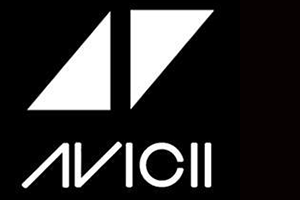

| 想分享一些A神的歌 |  |
| (一)Levels | |
| 2011年，Avicii的成名作"Levels"红遍全球，这首单曲不仅在老家瑞典成为冠单，在美国公告牌舞曲榜上拿到第一名，还在世界舞曲排行榜上蝉联了16周冠军，更帮Avicii收获了格莱美奖提名。 | ||
| （二）X You | ||
| 2013年1月9日，艾维奇与爱立信公司合作启动“Avicii X You”计划，旨在制作世界上第一首“全民参与制作”的热播单曲，该计划的成品曲《X you》于同年2月发布。而在你看到的视频最后，就是所有参与制作的人的名字。 | ||
| (三)Waiting For Love | ||
| Where there's a will, there's a way, kind a beautiful 有志者事竟成，多么美好的事情世界 And every night has its day, so magical 黑夜过去就是黎明，这里充满神奇 And if there's love in this life, there's no obstacle 如果生活充满爱，世界将不再有阻碍 That can't be defeated |
||
| (四)Wake Me Up | ||
| So wake me up when it's all over 当一切都结束的时候再叫醒我吧！ When I'm wiser and I'm older 当我更睿智，更年迈的时候 All this time I was finding myself 我曾经一直在寻找我自己 And I didn't know I was lost 而我竟在不知不觉中迷失了自我 |
||
| (五)The Nights | ||
| One day my father he told me 那天我父亲 对我说 Son, don't let this slip away 孩子 时光匆匆莫留悔 When I was just a kid, I heard him say 稚嫩的我听见他说着 When you get older 当你长大了 Your wild heart will live for younger days 会想起当年不羁的岁月 Think of me if ever you're afraid 孤单惊慌时 就想想还有我在 He said, one day you'll leave this world behind 他说过 总有一天 你会远远离开 So live a life you will remember 要记住每个值得回忆的时刻 |
||
| AVICII曾连续26天疯狂演出不休息，而却将所有收入捐给了一家慈善机构。 A神曾经表示：全世界角落都有挨饿的孩子，美国有六分之一的人饿着肚子，我想推翻普通大众对电子舞曲音乐的看法，希望这个举动推翻民间对电音只联想到荒谬派对的负面刻板印象。 不仅如此他还在MV中反对暴力与人口贩卖的立场。 无论是对音乐，还是对社会现象，A神都在一直都在向世界传达善良的东西。 你曾今唤醒了无数人，现在却永远地在黑暗中沉睡了。 或许是上帝他老人家也因为你而热爱上电音，所以他需要你吧。 Avicii，谢谢你，你的音乐将永远活在我们的身边，并且将会传承下去。 back |
||